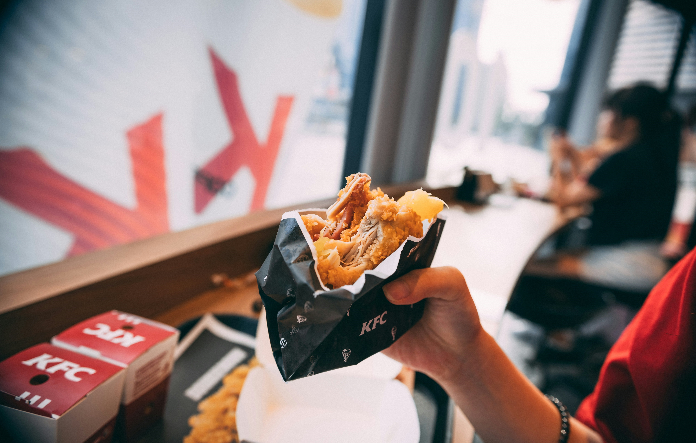
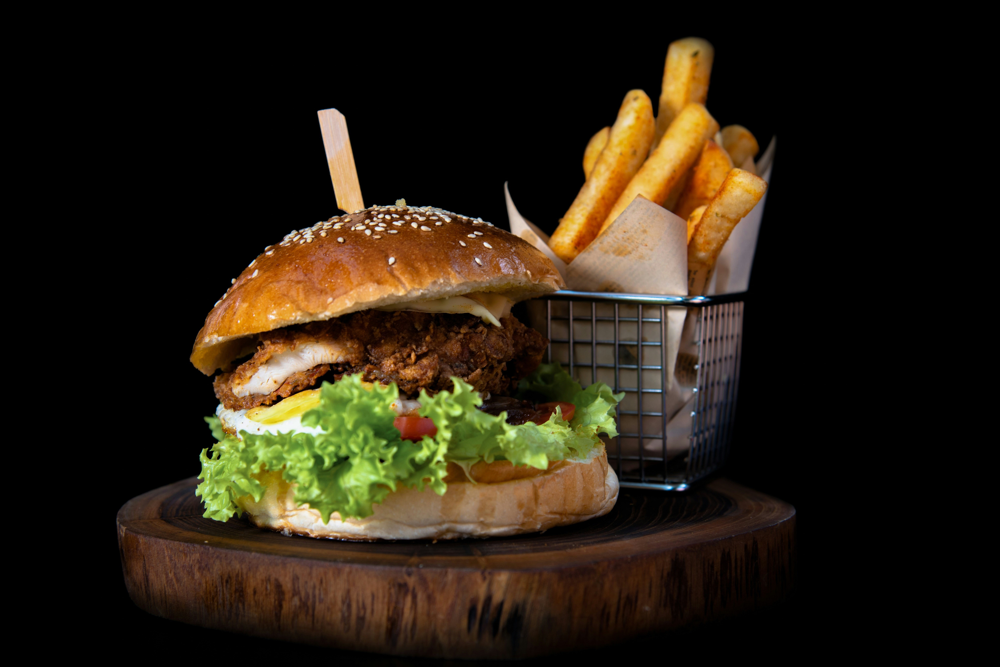
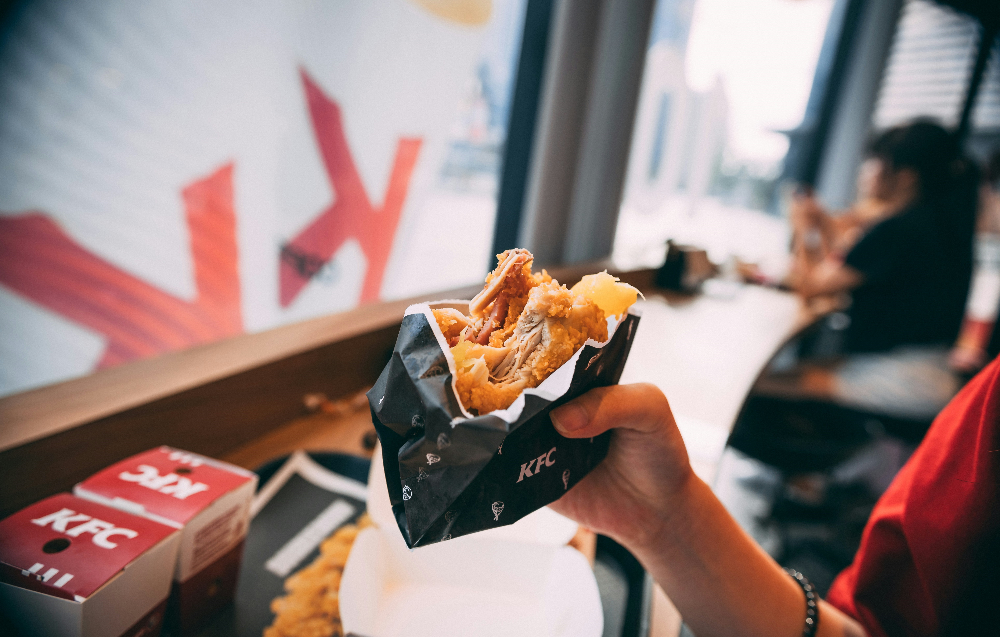
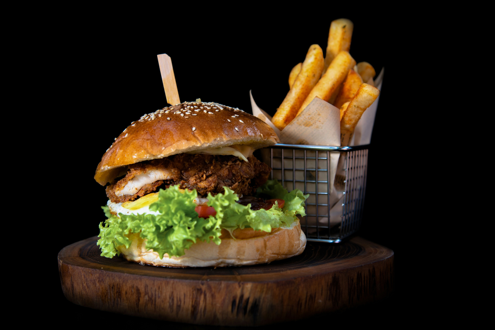

PROJECT REPORT
This project aims to analyze the nutritional content of fast food items using machine learning models.
The fast food dataset used for this analysis is sourced from kaggle.
The goal is to predict the 'Total Fat (g)' and 'Calories from Fat' values based on other nutritional features.
Data Exploration and Preprocessing
The initial steps involve importing necessary libraries and loading the dataset.
The dataset is explored to understand its structure, check for missing values, and handle duplicates.
Additionally, Label Encoding is applied to categorical columns ('Company' and 'Item') to make them suitable for modeling.
Correlation Analysis
A correlation matrix is computed to identify features that are positively or negatively correlated with the target variables
('Total Fat (g)' and 'Calories from Fat'). Features with low correlation (|correlation| < 0.5) are dropped from the dataset.
Feature Selection
Forward selection is performed to identify the most relevant features for predicting 'Total Fat (g)' and 'Calories from Fat'.
The selected features are then used for training machine learning models.
Model Training and Evaluation
Three regression models are employed: Linear Regression, Random Forest, and Gradient Boosting.
The models are trained on the selected features and evaluated using metrics such as R2 Score, Mean Absolute Error (MAE),
and Root Mean Squared Error (RMSE).The performance of each model is assessed on a test set.
Results
The best-performing model is identified based on the highest R2 Score.
Feature importance is visualized to understand the contribution of each feature in predicting the target variables.
Conclusion
The report concludes with insights into the nutritional analysis of fast food items,
highlighting the most influential factors contributing to 'Total Fat (g)' and 'Calories from Fat'.
The best-performing model is recommended for further use in predicting these nutritional values.
It's important to note that the predictive accuracy of the models may be influenced by the dataset's characteristics and
the inherent complexity of nutritional analysis.
 


